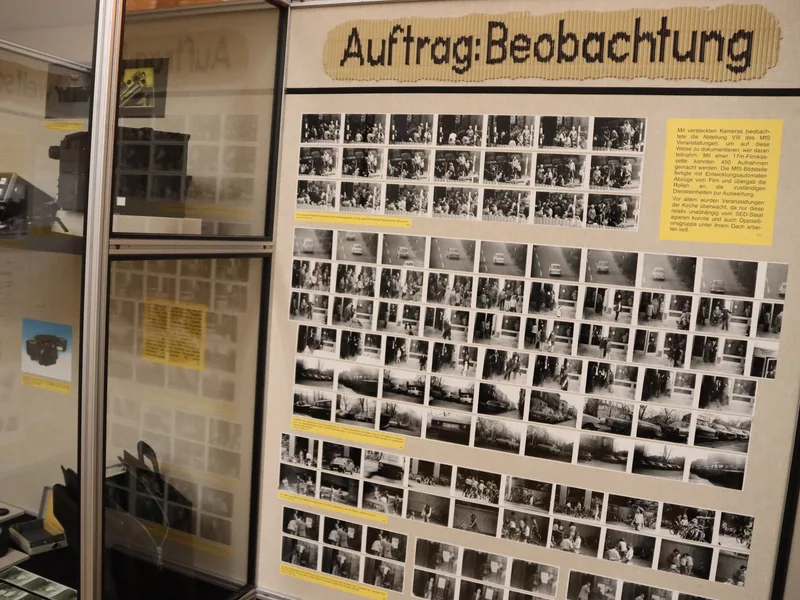
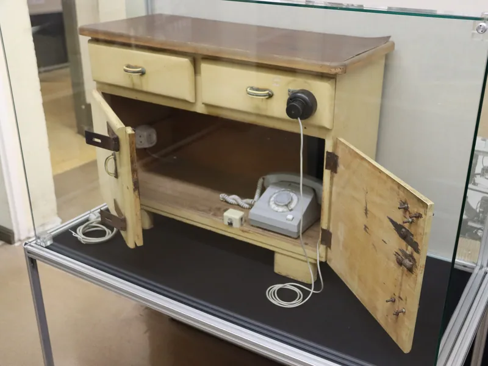
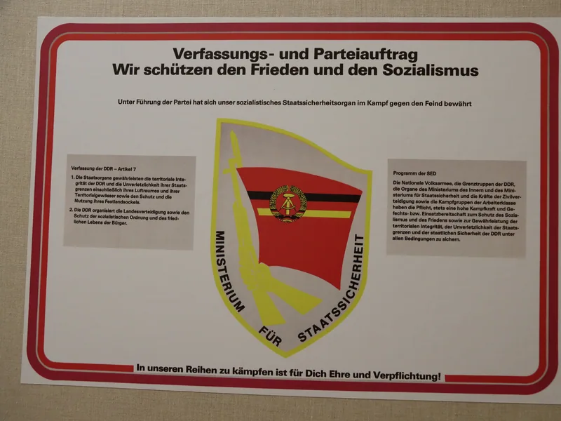
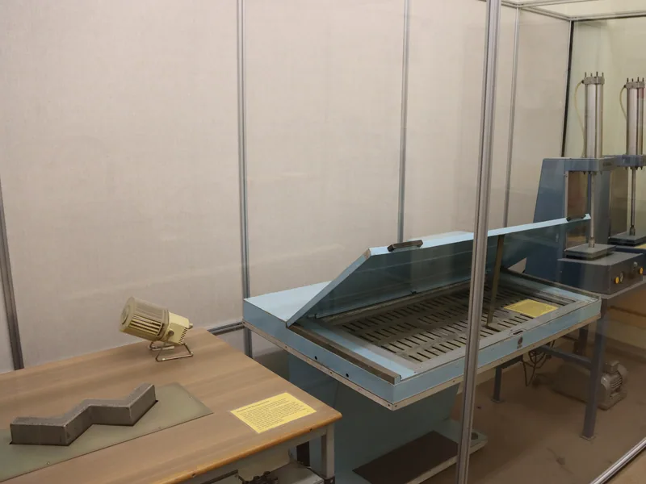
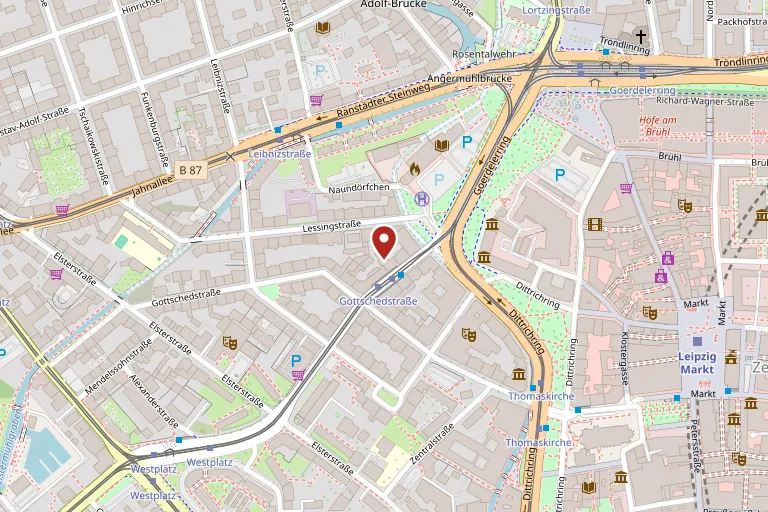

Museum in der Runden Ecke
Am Dittrichring in Leipzig, in den Originalräumen der früheren Stasi-Bezirksverwaltung — ein Ort der Friedlichen Revolution.
Das Haus am Dittrichring
Das Gebäude am Dittrichring wurde von 1911 bis 1913 als Geschäftshaus der Alten Leipziger Feuerversicherung errichtet; die Pläne stammen von den Architekten Hugo Licht und Karl Poser.
Von 1950 bis 1989 nutzte das Ministerium für Staatssicherheit das Haus als Sitz seiner Bezirksverwaltung Leipzig. Hinter der bürgerlichen Fassade wurde die Überwachung einer ganzen Region organisiert.

Der 4. Dezember 1989
Am Abend des 4. Dezember 1989 besetzten Demonstrantinnen und Demonstranten im Rahmen der Leipziger Montagsdemonstrationen die Bezirksverwaltung der Staatssicherheit.
Aus dem Engagement dieser Wochen ging die Gedenkstätte hervor. Ihr Träger ist bis heute das Bürgerkomitee Leipzig e. V.

Stasi — Macht und Banalität
Seit August 1990 zeigt das Bürgerkomitee in den Originalräumen der früheren Bezirksverwaltung die Dauerausstellung „Stasi — Macht und Banalität“.
Sie erklärt Geschichte, Struktur und Arbeitsweise des Ministeriums für Staatssicherheit — von der Überwachung des Alltags bis zu den Werkzeugen der verdeckten Kontrolle.

Aus der Ausstellung
Originalräume, Objekte und Tafeln aus der Dauerausstellung.
-
Haftzelle -

Auftrag: Beobachtung -

Getarnte Überwachungstechnik -

Selbstdarstellung des MfS -

Ausstellungsstück in der Vitrine
Öffnungszeiten
| Montag bis Sonntag | täglich 10 bis 18 Uhr |
|---|
Stand: Juli 2026. Bitte vor dem Besuch beim Haus bestätigen lassen.
Gut zu wissen
- Derzeit ist die Gedenkstätte vorübergehend nur von 11 bis 16 Uhr geöffnet. Bitte prüfen Sie die aktuellen Zeiten vor Ihrem Besuch auf runde-ecke-leipzig.de.
- Das Museum im Stasi-Bunker öffnet jedes letzte Wochenende im Monat von 13 bis 16 Uhr.
Eintritt
| Karte | Preis |
|---|---|
| Erwachsene | 5,00 € |
| Ermäßigt (Schüler, Studierende) | 4,00 € |
- Der Eintritt schließt den Audioguide ein.
- Führungen für Gruppen sind nach Voranmeldung möglich; öffentliche Führungen sind derzeit nicht möglich. Die aktuellen Konditionen erfragen Sie bitte beim Bürgerkomitee Leipzig.
Preisstand: Juli 2026.
Anfahrt
Anschrift
Dittrichring 24
04109 Leipzig
Adresse
Dittrichring 24, 04109 Leipzig — zentral am Dittrichring, dem westlichen Teil des Leipziger Innenstadtrings (Promenadenring).

Kontakt
Fragen zum Besuch, zu Führungen oder zur Barrierefreiheit beantwortet das Bürgerkomitee Leipzig.
- Träger
- Bürgerkomitee Leipzig e. V. für die Auflösung der ehemaligen Staatssicherheit (MfS)
- Telefon
- +49 341 9612443
- mail@runde-ecke-leipzig.de
- Im Netz
- www.runde-ecke-leipzig.de